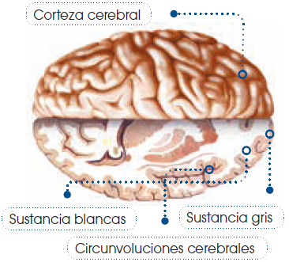

Anatomía y fisiología de los seres vivos
Sistema nervioso y endócrino
La función de la relación
La función de relación nos permite percibir información de nuestro cuerpo, tanto del interior como del exterior, para analizarla y elaborar una respuesta adecuada.
De este modo, podemos dividir la función de relación en tres fases: percepción de la información, análisis de la información y emisión de una respuesta.
Percepción de la información
Obtenemos información del ambiente que nos rodea mediante los órganos de los sentidos; estos actúan como receptores de estímulos externos, (una luz, un sonido o un sabor).
Los sentidos son: vista, oído, equilibrio, olfato, gusto y tacto.
También existen receptores internos que captan las condiciones del interior del cuerpo. Un caso de lo anterior son, los barorreceptores, que captan los cambios de presión sanguínea en las arterias; los quimiorreceptores, que detectan las variaciones de concentración de oxígeno y de dióxido de carbono de la sangre; etcétera. Estos receptores se encuentran conectados con los centros nerviosos mediante los nervios.
Análisis de la información
Todos los estímulos captados por los órganos de los sentidos y por los receptores internos son transmitidos al sistema nervioso. En este se analiza la información y se genera una reacción o respuesta. El sistema nervioso está formado por el sistema nervioso central y el sistema nervioso periférico.
Emisión de respuesta
Las respuestas o reacciones de nuestro organismo son ejecutadas por el aparato locomotor y el sistema endócrino, que se encargan de llevar a cabo el movimiento de los órganos y la regulación de su funcionamiento. El sistema locomotor está formado por los huesos y los músculos. El sistema endócrino está constituido por diversas glándulas que elaboran unas sustancias denominadas hormonas.
Los órganos de los sentidos
Los sentidos son la puerta de entrada de los estímulos y nos proporcionan información del mundo que nos rodea.
A continuación describiremos los órganos implicados en los sentidos de la vista, el oído, el equilibrio, el olfato, el gusto y el tacto, así como su mecanismo de funcionamiento.
Vista
El sentido de la vista nos permite apreciar el color, la forma, el tamaño y la distancia a la que se encuentran los objetos.
La vista se da a través de los ojos, dos órganos casi esféricos, también denominados globos oculares, situados en dos cavidades de los huesos de la cabeza.
A continuación, vamos a ver las partes que se distinguen en el ojo y sus funciones.
• Córnea: Capa transparente que recubre la parte anterior del ojo.
• Iris: Capa que puede dilatarse o contraerse y, de este modo, regular el paso de la luz. Esta presenta un orificio, denominado pupila, por donde la luz penetra al interior del ojo.
• Esclerótica: Capa que da forma y consistencia al globo ocular.
• Conjuntiva: Membrana que recubre y protege el globo ocular y el interior de los párpados. • Humor acuoso: Sustancia líquida que llena la cavidad situada entre la córnea y el cristalino.
• Cristalino: Membrana que tiene forma de lente y permite enfocar las imágenes exactamente sobre la retina. Esta estructura está sujeta por músculos que modifican su curvatura para favorecer el enfoque.
• Humor vítreo: Sustancia gelatinosa que ocupa la parte interna del globo ocular. Junto con el humor acuoso, nutre la córnea y el cristalino.
• Retina: Lámina de células que recubre la parte posterior e interna del ojo. Es la parte sensible a la luz que transmite la información al nervio óptico. En la parte externa del ojo se distinguen diversas estructuras encargadas de su protección.
• Párpados: Capas de tejido que recubren la parte anterior del ojo, reparten las lágrimas y protegen el ojo de la desecación.
• Pestañas: Pelos pequeños situados en los párpados que hacen sombra encima de la pupila.
• Cejas: Pelos que cubren las prominencias situadas encima de los ojos, desvían el sudor y evitan que entre en los ojos.
Veamos cómo participan en el mecanismo de la visión las estructuras anteriores.
- El estímulo visual entra a través de la córnea y atraviesa la pupila, que es regulada por el iris.
- El cristalino modifica su curvatura para enfocar el objeto.
- Las imágenes se proyectan sobre la retina.
- Los estímulos luminosos que llegan a la superficie de la retina son enviados al cerebro a través del nervio óptico.
La trayectoria de los rayos de luz es rectilínea y, al penetrar en el ojo por un orificio pequeño, se entrecruzan; como consecuencia, se forma sobre la retina una imagen invertida del objeto observado.
Después el cerebro interpreta correctamente la imagen.
La retina está formada por células denominadas fotorreceptoras porque captan la energía de la luz. Estas pueden ser de dos tipos: conos y bastones.
Los conos perciben detalles de las imágenes y permiten la visión en color.
Los bastones captan el negro, el blanco y matices de gris, a causa de su gran sensibilidad a la luz.
Oído
Gracias a este sentido percibimos la intensidad, la duración y el timbre de los sonidos.
Los órganos receptores son los oídos, situados en la parte lateral del cráneo.
Lo sentidos más desarrollados en el ser humano son el oído y la vista.
En el oído se distinguen tres partes:
• Oído externo. Consta del pabellón auricular, u oreja, y del conducto auditivo externo.
• Oído medio. Consta del tímpano, el martillo, el yunque, el estribo y la ventana oval.
• Oído interno. Consta del caracol y el nervio auditivo.
El mecanismo de la audición es el siguiente:
- El pabellón auricular recoge la vibración y el conducto auditivo la transmite al tímpano.
- El tímpano es una membrana que transmite la vibración a una cadena de huesecillos formada por el martillo, el yunque y el estribo. Este último, al ser golpeado, presiona sobre la membrana denominada ventana oval.
- La vibración de la ventana oval pasa al líquido del interior de una cavidad enrollada en espiral que se denomina caracol. El líquido transmite la vibración a los cilios de algunas de las células que revisten el interior de las paredes del caracol. La vibración de los cilios transmite la señal al nervio auditivo.
Equilibrio
El equilibrio es el sentido que nos permite percibir y controlar la postura del cuerpo.
El aparato vestibular es el órgano del equilibrio y se encuentra en el oído interno.
Está compuesto por:
• Canales semicirculares. Conductos llenos de un líquido denominado endolinfa.
• Órganos otolíticos. Pequeños sacos denominados sáculo y utrículo, estos contienen gránulos calcáreos que reciben el nombre de otolitos.
A continuación veremos el mecanismo del equilibrio:
- La endolinfa se desplaza por los canales semicirculares, cuando por ejemplo movemos la cabeza.
- Las células ciliadas que se encuentran en estos canales perciben la vibración y la transmiten al nervio auditivo.
- En otros movimientos, la endolinfa provoca el desplazamiento de los otolitos.
- Cuando los otolitos entran en contacto con los cilios, estos se doblan, lo que se transmite al nervio auditivo.
El equilibrio del cuerpo
Vamos a comprobar, fácilmente, cómo en el sentido del equilibrio también contribuye la información que obtenemos a través de la visión, la piel, etcétera.
• Ponte de pie y levanta una pierna.
• Baja la pierna y repite el proceso con los ojos cerrados.
Con los ojos cerrados es más difícil equilibrar el cuerpo, ello se debe a que la visión nos permite observar las características del espacio y nos ofrece puntos de referencia que contribuyen a mantener el equilibrio.
Olfato
Gracias al sentido del olfato captamos estímulos producidos por la presencia de sustancias químicas en el aire, o bien en los alimentos que entran en la boca.
En la nariz o cavidad nasal se halla el órgano del olfato. Veamos cuáles son sus partes:
• Fosas nasales. Orificios por los que entra el aire y que comunican con la cavidad bucal.
• Cornetes nasales. Invaginaciones de las paredes de las fosas nasales.
• Mucosa olfatoria. Mucosa que recubre las paredes de los cornetes nasales.
El mecanismo gracias al cual percibimos los olores es el siguiente:
- Algunas sustancias desprenden partículas al aire. Cuando respiramos, estas partículas penetran en las fosas nasales y se ponen en contacto con los receptores de la mucosa olfatoria.
- El contacto entre estas sustancias y los receptores desencadena un impulso nervioso que es transmitido a los centros nerviosos.
Gusto
El sentido del gusto nos permite percibir diferentes características de los alimentos: dulce, salado, ácido y amargo.
En la lengua se encuentra el sentido del gusto y en ella diferenciamos:
• Papilas gustativas. Invaginaciones de la lengua.
• Botones gustativos. Estructuras en las que se encuentran los receptores del gusto.
El mecanismo por el que percibimos los gustos es el siguiente:
- Las sustancias que entran en nuestra boca se disuelven en la saliva y entran en contacto con las papilas y los botones gustativos.
- En ellos se produce un impulso nervioso que es transmitido a los centros nerviosos.
El sabor
El sabor es la sensación que nos provocan los alimentos o las bebidas. Está formado por la combinación de dos tipos de estímulos, los olfativos y los gustativos.
Tacto
La función del sentido del tacto es reconocer la forma, la temperatura, y otras características de los objetos cuando entra en contacto con ellos.
El sentido del tacto está repartido por toda la piel del cuerpo.
En la piel distinguimos tres capas que van desde el exterior hacia el interior del cuerpo: epidermis, dermis e hipodermis. En las dos primeras existen diferentes tipos de receptores sensibles a diversos estímulos.
• Epidermis: Es la capa externa, formada por tejido epitelial, y en esta se encuentran los receptores que captan el dolor.
• Dermis: Es la capa interna y está formada por tejido conectivo, tejido muscular, capilares, glándulas, y más. En la dermis se encuentran los receptores de la temperatura, la presión y el contacto.
• Hipodermis: Esta formada por una capa de tejido adiposo de grosor variable y una capa de tejido conectivo que une la piel con los órganos y tejidos adyacentes.
Componentes de la piel
En la piel encontramos diversos componentes como los pelos, que ayudan a conservar el calor corporal; las glándulas sebáceas, que segregan una sustancia grasa que da elasticidad al pelo y a la piel; o las glándulas sudoríparas, que producen y segregan el sudor, el cual interviene en la regulación de la temperatura corporal.
El sistema nervioso
El sistema nervioso analiza todos los estímulos captados por los órganos de los sentidos y por los receptores internos, y también elabora respuestas. La transmisión de esta información es llevada a cabo gracias a las características de las neuronas, que son las células que constituyen este sistema.
A continuación estudiaremos las neuronas y su funcionamiento en el sistema nervioso central y sistema nervioso periférico.
Las neuronas
Los cuerpos de las neuronas se agrupan y constituyen los centros nerviosos del cerebro, como el encéfalo. Los axones de las neuronas de estos centros forman los nervios.
Las neuronas se comunican entre sí, transmitiendo la información en pequeñas corrientes eléctricas, estas son los impulsos nerviosos.
La neurona que emite un impulso nervioso es la neurona presináptica y la neurona que lo recibe es la neurona postsináptica.
La comunicación entre las neuronas se establece en unas uniones denominadas sinapsis, formadas por el extremo de la neurona presináptica y una dendrita de la neurona postsináptica. El espacio que queda entre ambas es el espacio intersináptico. Veamos cómo tiene lugar la transmisión del impulso nervioso en la sinapsis:
- El impulso nervioso viaja por la neurona presináptica desde las dendritas hasta el extremo del axón.
- Este impulso provoca la liberación de unas sustancias, denominadas neurotransmisores, al espacio intersináptico.
- Los neurotransmisores cruzan este espacio y se unen a la dendrita de la neurona postsináptica, produciendo en esta un nuevo impulso nervioso, provoca la liberación de unas sustancias, denominadas neurotransmisores, al espacio intersináptico.
Estructura celular de la neurona
En las neuronas se distinguen tres partes:
• Cuerpo neuronal. Es la parte de la neurona que contiene el núcleo y la mayor parte del citoplasma.
• Dendritas. Ramificaciones cortas que parten del cuerpo de la neurona. A través de las dendritas, las neuronas se conectan entre sí y reciben la información.
• Axón. Prolongación más larga que las dendritas y poco ramificada. Su función es transmitir información a otras neuronas.
El sistema nervioso central
El sistema nervioso central analiza la información y emite respuestas, está formado por un gran número de neuronas. Los cuerpos de estas son de color gris y sus axones son blanquecinos, debido a la mielina que los recubre. Por ello, las zonas donde se acumulan cuerpos neuronales se denominan sustancia gris y las zonas con haces de axones, sustancia blanca.
En el sistema nervioso central se distinguen dos grandes centros nerviosos: el encéfalo y la médula espinal.
• El encéfalo está en el interior del cráneo, comprende al cerebro, al cerebelo y al tronco encefálico.
• La médula espinal se encuentra en el interior de la columna vertebral. Esta es la vía de conexión entre el encéfalo y el resto del cuerpo.
Todo el sistema nervioso central está recubierto por tres membranas, denominadas meninges, separadas entre sí por el líquido cefalorraquídeo. La función de las meninges y del líquido cefalorraquídeo es proteger el sistema nervioso central, amortiguando los efectos que pueden causar los movimientos bruscos del cuerpo.
A continuación vamos a estudiar las características de cada uno de los órganos que componen el encéfalo:
Cerebro
El cerebro se divide en dos mitades denominadas hemisferios.
La corteza cerebral es la parte externa y presenta numerosos repliegues denominados circunvoluciones cerebrales. La corteza cerebral está formada por sustancia gris, mientras que la sustancia blanca constituye la parte interna del cerebro.
Según la función, en la corteza, se distinguen diferentes áreas.
• Corteza motora. Se encarga de enviar una señal a través de los nervios a los músculos para que realicen el movimiento.
• Corteza sensorial. Recibe la información de los receptores del tacto, la temperatura, el dolor y el gusto a través de los nervios.
• Corteza visual. Recibe las sensaciones visuales.
• Corteza auditiva. Recibe los estímulos sonoros.
• Corteza de asociación. Analiza la información y elabora las respuestas. En esta área tienen lugar las funciones relacionadas con la memoria, el pensamiento y la capacidad de decisión.

El sistema nervioso periférico
El sistema nervioso periférico comunica el sistema nervioso central con los órganos de los sentidos y con los órganos encargados de ejecutar las respuestas. Está constituido por toda la red de nervios que recorre nuestro cuerpo, los que parten del encéfalo y la médula espinal.
Según su función, distinguimos dos tipos de nervios: los nervios sensitivos y los motores.
• Los nervios sensitivos están formados por neuronas sensitivas y se encargan de transmitir la información desde los órganos de los sentidos hasta el sistema nervioso central.
• Los nervios motores están formados por neuronas motoras y transmiten los impulsos nerviosos desde el sistema nervioso central hasta los diferentes órganos del cuerpo, donde se ha de producir una respuesta.
Todos los nervios que salen del cerebro, cerebelo, tronco encefálico y médula espinal tienen como destino final los músculos y el resto del cuerpo.
Los nervios motores constituyen dos tipos de red nerviosa, según el tipo de movimientos que controlen. Así distinguimos la red nerviosa somática y la red nerviosa autónoma.
Los nervios suelen encontrarse asociados de dos en dos. Por esto el nervio sensitivo, que va desde un órgano al cerebro, circula paralelo al nervio motor que transmite la respuesta del cerebro al órgano.
Acto reflejo
La red nerviosa somática también puede controlar movimientos involuntarios de los músculos esqueléticos, como en el caso de un acto reflejo.
Un ejemplo de acto reflejo es apartar la mano en caso de quemarnos.
Red nerviosa somática: Controla generalmente movimientos voluntarios de los músculos. En concreto, controla la musculatura esquelética.
Red nerviosa autónoma: Controla movimientos involuntarios de los músculos. Particularmente controla la musculatura cardíaca y la lisa, como la de los vasos sanguíneos y la de los conductos de los diversos sistemas.
Tipos de nervios
Según el órgano del que parten distinguimos los nervios craneales y los raquídeos.
• Los nervios craneales son los que salen del encéfalo. Algunos están formados por neuronas sensitivas, otros por motoras y otros por ambas.
• Los nervios raquídeos son los que parten de la médula; todos ellos contienen neuronas sensitivas y motoras.
El sistema endócrino
El sistema endócrino es el encargado de llevar a cabo la respuesta hormonal; es decir, la segregación, como reacción a un estímulo, de unas sustancias denominadas hormonas que controlan el funcionamiento de ciertos órganos.
Este sistema está constituido por las glándulas endocrinas, que están especializadas en la elaboración de hormonas. Las hormonas son moléculas orgánicas, de naturaleza lipídica o proteica, que son vertidas en la sangre, que las transporta hasta los órganos en los que deben actuar, estos se conocen como órganos diana. Las hormonas se producen en pequeñas cantidades.
La actividad de las glándulas endocrinas está controlada por el hipotálamo, que es una agrupación de neuronas situada en la parte inferior del cerebro, con función secretora.
Las principales glándulas endocrinas del cuerpo humano son las siguientes:
Hipófisis
Pequeña estructura glandular, situada bajo el hipotálamo, que se divide en dos lóbulos. Segrega hormonas, entre las que destacan:
• Hormona del crecimiento: activa el crecimiento y el desarrollo corporal.
• Prolactina: estimula la secreción de leche después del parto.
• Hormona foliculoestimulante: activa la producción de los gametos.
Tiroides y paratiroides
La tiroides es una glándula situada en la base del cuello, junto a la tráquea. Segrega tiroxina, hormona que activa funciones celulares como la síntesis de proteínas, especialmente durante épocas de crecimiento.
La paratiroides es una pequeña glándula situada en la parte posterior de la tiroides. Segrega paratiroidea que regula la formación de los huesos.
Páncreas
Glándula anexa del sistema digestivo, situada a la altura de la cintura, en el lado izquierdo del cuerpo. Segrega hormonas como la insulina y el glucagón.
Glándulas suprarrenales
Glándulas situadas sobre los riñones. En la corteza suprarrenal se segregan las siguientes hormonas:
Cortisol
Actúa en la degradación de proteínas y grasas.
Adrenalina
Prepara al cuerpo en una situación de alarma; favorece el incremento del ritmo cardíaco, la activación del sistema nervioso central, la dilatación de pupilas.
• Ovarios y testículos: Son los órganos productores de los óvulos y los espermatozoides. Los ovarios segregan estrógenos y progesterona, vinculadas al desarrollo de los caracteres sexuales de la mujer.
Secreción hormonal
La secreción hormonal está controlada por el sistema nervioso central, concretamente por el hipotálamo.
El hipotálamo recibe información de estímulos internos y externos a través de los órganos de los sentidos. Estos estímulos se procesan y luego se elabora una respuesta.
Las neurohormonas estimulan o inhiben la acción de la hipófisis. Cuando se estimula la hipófisis, esta segrega hormonas que actúan directamente sobre los órganos diana o también sobre hormonas que tienen como función estimular otras glándulas endocrinas.
De este modo, se establece un complejo mecanismo en el que el sistema nervioso controla al sistema endocrino y este, a su vez, regula los procesos fisiológicos del organismo.
Veamos un ejemplo de regulación hormonal sobre la concentración de glucosa:
- Después de una comida, aumentan los niveles de glucosa en la sangre. Esta variación del medio interno hace que el páncreas secrete insulina. La insulina estimula la absorción de la glucosa, por parte de las células, para que disminuya su concentración en la sangre.
- Al contrario, cuando pasamos mucho tiempo sin comer, los niveles de glucosa en la sangre bajan. Esta variación del medio interno hace que otras células del páncreas secreten la hormona glucagón. El glucagón facilita el paso a la sangre de la glucosa que se encuentra en las células.
La regulación de los niveles de glucosa en la sangre es un proceso viable gracias a la acción conjunta de diversas hormonas.
Alteraciones del sistema nervioso esta perturbación
Existe un sinnúmero de alteraciones del sistema nervioso. En muchos casos, es difícil de comprender cuáles son sus causas y sus efectos van de leves a severos.
A continuación, veremos ciertas alteraciones, consideradas como las más comunes:
Ataque de apoplejía
Consiste en problemas en la circulación y en el cerebro. Este último resulta seriamente afectado por el corte de aporte sanguíneo, que se debe al bloqueo o deterioro de una arteria cerebral.
Un ataque de este tipo puede llegar a ocasionar debilidad momentánea, aturdimientos temporales, trastornos en la visión y en el lenguaje, los que pueden durar un corto período, incluso segundos.
Si el ataque llega a ser fuerte puede ocasionar una parálisis de la mitad del cuerpo e incluso la muerte.
Conmoción
Una conmoción se asocia directamente con el cerebro esta alteración es causada por un golpe seco en la cabeza. Con frecuencia, esta perturbación va acompañada de ausencia temporal del conocimiento, y pueden presentarse vómitos, dolor de cabeza, falta de concentración, irritabilidad y de memoria.
Las conmociones son muy frecuentes en los deportistas, especialmente en aquellos que tienen riesgo de recibir golpes, como los futbolistas o los luchadores.
Convulsiones
En esta alteración se producen contracciones musculares de forma muy violenta, estas pueden ser cortas y se dan de manera muy recurrente. Las convulsiones pueden ser de larga duración o se pueden presentar como ligeras sacudidas que duran segundos. Estas se podrían presentar como síntoma frente a otras enfermedades: la epilepsia, diferentes formas de envenenamiento, nutrición no balanceada y defectuosa y enfermedades como la meningitis o el tétanos.
Epilepsia
Consiste en momentos periódicos e incontrolables de confusión, de la atención o del conocimiento.
La causa de la epilepsia es a menudo desconocida. Sin embargo, a esta alteración la clasificamos en dos tipos conocidos como petit mal y gran mal. El petit mal se presenta como una momentánea de conciencia y dura cerca de un segundo. Los ataques de gran mal generalmente van seguidos por otros efectos, como sensaciones extrañas del olfato, del gusto y del tacto. El ataque en sí supone la pérdida del conocimiento y la tiesura de los miembros del afectado, este dura aproximadamente unos treinta segundos, y puede ser seguido de contracciones musculares rítmicas. Frecuentemente, los ataques epilépticos suceden cuando se tiene ataques gran mal consecutivos.
Parálisis
Esta anomalía se presenta con la pérdida de la fuerza de un músculo o de un grupo de músculos. Generalmente, viene acompañada por una evidente incapacidad y deterioro de funciones específicas como el pestañeo, el habla, la emisión de orina, el control de esfínteres o la utilización de un miembro. La parálisis, comúnmente, se da porque hay algún tipo de daño en el sistema nervioso, producido por la polineuritis o la poliomielitis.
Enfermedades del sistema nervioso y endócrino
Existe una amplia gama de enfermedades de estos dos sistemas, los que están altamente relacionados. A continuación, veremos los desórdenes más conocidos y de mayor incidencia a nivel mundial.
Enfermedades del sistema nervioso
El conocimiento de las enfermedades mentales se encuentra en constante cambio en proporción a los avances en el conocimiento del funcionamiento del sistema nervioso.
Algunas de las enfermedades y los trastornos que afectan al sistema nervioso son: ansiedad, depresión, demencia, neurosis, esquizofrenia o paranoia.
A continuación, estudiaremos a la ansiedad, por su gran incidencia en nuestra sociedad, y al Alzheimer, una enfermedad degenerativa que aún no se tiene tratamiento.
Ansiedad
La ansiedad es una emoción que se presenta de forma normal, como respuesta a ciertas situaciones conflictivas, como un accidente o un examen. Sin embargo, si se presenta sin una causa aparente, debe considerarse un trastorno. En este caso, la ansiedad se debe a alteraciones en algunos neurotransmisores.
Los síntomas de esta alteración pueden ser físicos y psíquicos, como dificultad al respirar, temblores, aceleración del ritmo cardíaco, o bien intranquilidad, miedo, inseguridad, etcétera.
El tratamiento de la ansiedad consiste principalmente en la atención psicológica. En algunos casos, se administran medicamentos que atenúen la sensación de malestar.
Alzheimer
El Alzheimer es un trastorno mental grave debido a la degeneración temprana y acelerada de neuronas y a la alteración de la comunicación entre ellas.
Los síntomas de esta enfermedad degenerativa son: la pérdida de la memoria y de la orientación, la incapacidad de aprendizaje y de razonamiento, así como el deterioro de las capacidades y habilidades adquiridas. Estos síntomas se intensifican con el paso del tiempo.
En la actualidad, no se conoce cura para esta enfermedad, aunque pueden aplicarse algunos tratamientos que mejoren la vida del paciente.
Enfermedades del sistema endócrino
Este sistema es coordinador y efector, está constituido por todas las glándulas endócrinas. A pesar de que es un sistema muy organizado, existen varias enfermedades asociadas a estas. A continuación, veremos ciertas enfermedades con mayor incidencia en nuestra sociedad.
Hipertiroidismo
Es una enfermedad donde la glándula tiroides produce y libera una cantidad excesiva de la hormona tiroidea, los síntomas pueden presentarse con taquicardias, temblores, nerviosismo y pérdida de peso.
El tratamiento es variado, según el tipo de hipertiroidismo y la gravedad de la afección, pero, en casos más avanzados, se atiende con yodo radioactivo, medicamentos y cirugía.
Hipotiroidismo
Se produce cuando la glándula tiroides, situada en la parte frontal del cuello, no produce suficiente cantidad de hormonas tiroideas. Los síntomas pueden ser diferentes según el caso; estos son, principalmente, fatiga y pereza leves. En esta enfermedad el metabolismo se hace más lento y se desarrollan otros síntomas como aumento de la sensibilidad al frío, estreñimiento, aumento de peso, entre otros.
El tratamiento se da mediante la administración de una hormona tiroidea sintética para que, de ese modo, se regulen los niveles hormonales.
Diabetes
Esta enfermedad metabólica es considerada como una de las más crónicas a nivel mundial y consiste en el aumento de los niveles de azúcar en la sangre.
La insulina, que es una hormona producida por el páncreas, regula la cantidad de azúcar; la escasez en la producción de esta puede ser otra causa para padecer diabetes.
Las personas con diabetes presentan generalmente hiperglucemia, debido a que su cuerpo no puede movilizar el azúcar hasta los adipocitos hepáticos y las células musculares para que este sea almacenado como energía.
Los síntomas más comunes son: visión borrosa, sed excesiva, fatiga, micción fuerte, hambre y de peso; su tratamiento consiste en medicamentos, dieta y ejercicios.
Sistema inmunológico en animales
Sistema inmunológico en invertebrados
Se ha estudiado de manera exhaustiva, y a nivel mundial, como el sistema inmunológico funciona y regula a los organismos vivos; su estudio se ha dado en individuos como los invertebrados y también en aquellos que tienen una mayor complejidad en su estructura, como son los seres humanos.
El estudio de los invertebrados y de sus sistemas inmunológicos se ha considerado más sencillo que los de otros seres vivos; sin embargo, esta apreciación no es del todo cierta, por esta razón el Dr. Paul Schmid- Hempel, un ecólogo evolutivo de un Instituto en Zúrich generó la siguiente afirmación: «Hemos subestimado la complejidad de la inmunidad invertebrada».
La mayoría de estudios en invertebrados han sido realizados en la mosca de la fruta, ya que es un organismo modelo gracias a su fácil manipulación y a su corto tiempo de ciclo de vida. El sistema de estos invertebrados (incluyendo a muchos grupos como esponjas, crustáceos, gusanos, chinches, polillas y abejas) ha desarrollado moléculas involucradas en la respuesta frente a patógenos externos como microbios, virus y bacterias que proliferan el desarrollo de enfermedades.
Dentro de otras áreas de investigación, los científicos han demostrado que los invertebrados tienen la capacidad de gestionar autónomamente su sistema inmunológico. Los insectos, principalmente, pueden reconocer los peptidoglicanos (uno de los componentes principales de la pared celular bacteriana) y esto, a su vez, genera una respuesta inmediata del sistema inmune. Cuando las bacterias fueron eliminadas, las moléculas del sistema digieren a los peptidoglicanos y de esta manera termina su respuesta inmune. Este caso se puede ejemplificar en las chinches hembras; estas resultan heridas en el apareamiento, lo que potencia su acción inmune, esta potenciación puede ocurrir incluso antes de la cópula, anticipando su respuesta.
Otra característica de los insectos es que estos pueden modificar y fortalecer su sistema inmune, preparándolo para una invasión patógena inminente. En este caso peculiar presentan las chinches hembras, generalmente estas resultan heridas en el apareamiento lo que potencia la acción inmune incluso antes de que ocurra la cópula, anticipando una respuesta.
A pesar de que los insectos, y en general los invertebrados poseen diferentes células y moléculas que los vertebrados, ambos siguen principios de detección de patógenos muy similares. Actualmente, nuevos estudios se cuestionan sobre los métodos de defensa frente a los patógenos.
Sistema inmunológico en vertebrados
El sistema inmunológico en los vertebrados tiene un alto grado de complejidad. Estos animales poseen un sistema adaptativo o adquirido, el que tiene la característica de reconocer a un antígeno de forma específica y, de ese modo, permite recordar al organismo las exposiciones previas que ha tenido frente a esta sustancia (memoria de reconocimiento). Así, el cuerpo genera una respuesta muy eficaz, después de ponerse en contacto con el antígeno (generación de una maduración de la respuesta inmune).
Existen dos tipos de glóbulos blancos, que son las principales células involucradas en la respuesta inmune. Estos se llaman linfocitos y son vitales para generar una respuesta específica frente al patógeno. Estas células son generadas en la médula ósea y cuando van madurando, se convierten en las células de respuesta del sistema, a estas se las denomina células T y células B.
Como complemento, y para dar una mejor respuesta frente a agentes infecciosos, se han generado vacunas que potencian la respuesta inmune del organismo; no obstante, para su efecto, se necesitan más de una dosis.
Existen siete clases de animales vertebrados, los que van de menor a mayor grado de desarrollo:
1. Peces sin mandíbulas (como la lamprea)
2. Peces cartilaginosos (tiburones)
3. Peces óseos (la gran mayoría de peces de agua dulce y salada)
4. Anfibios
5. Reptiles
6. Aves
7. Mamíferos
El organismo de los animales vertebrados es muy complejo, en relación a los órganos que generan la inmunidad; sin embargo, dentro de estos, los principales son los órganos linfoides.
Estos órganos son los dedicados a la producción y diferenciación de las células del sistema inmune. Los órganos linfoides están presentes en todos los vertebrados, pero su nivel de desarrollo y evolución depende del grado de complejidad de un organismo.
Los órganos del timo y del bazo son los generadores de linfocitos T, estos órganos se encuentran en los tiburones (exceptuando los peces sin mandíbulas) y se mantienen a lo largo de toda la cadena filogenética hasta el ser humano.
La médula ósea es la generadora de los linfocitos B y, en gran parte de los vertebrados, es el órgano linfoide primario.
En la escala evolutiva, este tejido se creó cuando los vertebrados tuvieron la capacidad de vivir y de adaptarse al medio terrestre. Por esta característica los peces no poseen médula ósea, mientras que los anfibios, adaptados a una vida semiacuática, presentan un tejido linfoide limitado en sus huesos. La médula ósea es totalmente funcional en los anfibios, reptiles, aves y mamíferos.
En los peces y en limitados anfibios, el riñón se comporta como el órgano linfoide principal y reemplaza las funciones de la médula ósea y los nódulos linfoides.
En cuanto a las aves, su órgano linfoide primario, para la generación de las células B es un órgano conocido como la bolsa de Fabricio. Por otra parte, en el caso de las ovejas y de los cerdos, animales que sí poseen médula ósea, unas adaptaciones llamadas placas de Peyer, las que están ubicadas en el intestino y ayudan a generar una respuesta inmune.
Otras estructuras linfoides son los ganglios linfáticos que se presentan en la escala filogenética de una forma más organizada y especializada. Estos ganglios están constituidos, principalmente, por folículos primarios de células B y rodeadas de linfocitos T. Los ganglios linfáticos aparecen bien definidos en los anfibios anuros y, a partir de estos animales, se encuentran en todos los vertebrados.
Solamente en las aves y mamíferos, animales homeotermos o de sangre caliente, surgen los folículos linfoides secundarios o centros germinales.
Los animales vertebrados tienen un elaborado sistema de inmunidad; estas son las únicas criaturas capaces de producir anticuerpos muy específicos frente a la gran variedad de patógenos que existe. Con respecto al número y tipo de inmunoglobulinas o anticuerpos (receptores de los linfocitos B), en la escala filogenética, los organismos más complejos presentan una mayor evolución de anticuerpos; en este marco, los mamíferos poseen superior cantidad de inmunoglobulinas.
Aparición de las inmunoglobulinas en la escala filogenética de los vertebrados.
Sistema inmunológico en los seres humanos
En los humanos, el sistema inmunológico es esencial para su supervivencia, debido a que existen muchos patógenos ambientales, potencialmente peligrosos, que causan un deterioro grave. Inclusive con una barrera para estos patógenos, los humanos continúan siendo susceptibles a infecciones graves.
Existen en los humanos dos tipos de inmunidades, las que se describen a continuación:
Inmunidad no específica (innata)
En este tipo de inmunidad, el organismo actúa como defensor frente a los patógenos externos, que pueden ser microbios pequeños como los virus y las bacterias e inclusive organismos más grandes como nematodos. Los patógenos que se encuentran en un cuerpo, generalmente causan enfermedades. Los organismos vivos que, cuando están en un cuerpo, causan enfermedades.
Todos los vertebrados tienen respuestas innatas en contra de patógenos comunes; en los seres humanos, la primera defensa involucra a barreras exteriores como la piel y las membranas mucosas. No obstante, cuando los patógenos sobrepasan estas barreras, a través de un corte, por inhalación, etcétera, pueden llegar a provocar daños extremadamente graves.
Los glóbulos blancos o fagocitos normalmente combaten a estos patógenos que atraviesan las barreras exteriores, ya que los envuelven, más tarde los absorben y finalmente los neutralizan para que no tengan efecto sobre el cuerpo.
Inmunidad específica
La inmunidad específica actúa como un complemento de la función de los linfocitos con el sistema inmunológico innato. En contraste con la inmunidad no específica, la específica presenta una respuesta dirigida a un patógeno en concreto. Solamente los vertebrados presentan este tipo de respuesta inmunitaria.
Como reacción de la inmunidad específica actúan las células T y las células B.
Los antígenos son cuerpos extraños que provocan una respuesta de las células T y B, son extremadamente específicas para estas células. Por lo general, pensamos que los antígenos son parte de los microbios, pero pueden estar presentes en otros ambientes.
Las células T se activan cuando un fagocito en particular, conocido como célula presentadora de antígeno (APC, por sus siglas en inglés), muestra un antígeno específico de la célula T. Dentro de esta combinación, se genera un elemento activador que provoca una respuesta inmunológica determinada. Las células T tienen tres subtipos, los que vamos a explicar a continuación:
Las células T colaboradoras, realizan diversas funciones:
• Ayudar a que las células B se activen y se dividan en células plasmáticas.
• Llamar a los fagocitos para que destruyan los microbios.
• Activar las células T asesinas.
Cuando ya están activadas, las células B, las células T asesinas reconocen las células infectadas del cuerpo y las generan una respuesta inmediata de destruir esas células.
Las células T reguladoras (o también llamadas células T supresoras) ayudan a controlar la respuesta inmunológica; estas reconocen cuando hay amenaza potente para el organismo y envían señales para suprimir y detener el ataque.
Experimento
Tema:
Cultivo de bacterias.
Investigamos:
En esta práctica nos enfocaremos principalmente en los factores externos que se encuentran en el ambiente y en la importancia de tener un buen aseo, para proteger a nuestro sistema inmunológico. Antes de la práctica, consultemos acerca de las barreras externas y las maneras de protección del cuerpo como la piel y la importancia de lavarse las manos. Además, investiguemos que factores externos son los involucrados en las afecciones al sistema inmune del cuerpo humano.
Objetivo:
Demostrar la importancia de lavarse las manos antes de comer para evitar enfermedades ocasionadas por factores ambientales.
Materiales:
• ½ sobre de gelatina sin sabor
• 1 cubito de caldo de gallina
• 2 frascos con tapa (de mayonesa o mermelada limpios)
•1 matraz Erlenmeyer de 250 ml
•1 recipiente grande (puede ser una olla)
Proceso:
1. Disuelvan el cubo del caldo de gallina y el sobre de gelatina en 250 ml de agua. Dejen hervir por aproximadamente diez minutos.
2. Esterilicen los frascos y sus tapas en agua hirviendo por cinco minutos.
3. Coloquen la mezcla en cada envase y métanlos tapados. Dejen que se enfríe y se haga sólida la gelatina.
4. Inmediatamente, ensucien las manos, cojan dinero, agarren un pasamano, etcétera.
5. Toquen la gelatina cuajada con las yemas de los dedos sucios, no hagan huecos. Luego de esta acción, tapen nuevamente la gelatina.
6. Laven bien las manos con agua y jabón y realicen el mismo procedimiento en el otro frasco.
7. Dejen los envases en un sitio cálido durante un período de 24 a 36 horas. Pasado este tiempo observen y anoten lo encontrado.
Cuestiones:
8. ¿Qué sucedió en el interior de los frascos?
9. ¿Cuáles son las bacterias ambientales más frecuentes en enfermedades humanas?
Proyecto
Observamos
Adaptaciones de los seres vivos
En esta práctica analizaremos la capacidad de adaptación de los seres vivos frente a los diferentes cambios del medio en el que habitan. Cada especie va cambiando a su ritmo; puede ser de forma lenta o rápida. Estos cambios son conocidos como adaptación biológica.
Estas adaptaciones pueden ser agrupadas en tres distintos grupos:
1. Adaptaciones morfológicas
Se basa en los cambios morfológicos en los individuos y les permite adaptarse al medio en el que viven; estos cambios generalmente ayudan a imitar formas, colores de animales más peligrosos o a tener estructuras externas que les ayuden a adaptarse. Existen dos tipos de adaptaciones morfológicas, las más comunes son: el camuflaje y el mimetismo.
2. Adaptaciones fisiológicas
Este tipo de adaptaciones tienen relación con el funcionamiento y el metabolismo interno de los diferentes órganos del individuo. En otras palabras, están representando un cambio dentro del funcionamiento que, a su vez, les ayuda a resolver problemas fisiológicos frente a los cambios ambientales. Existen dos tipos de adaptaciones, las más comunes son: la hibernación y la estivación.
3. Adaptaciones conductuales
Son adaptaciones que implican alguna modificación en el comportamiento de los organismos por diferentes causas, como asegurar la reproducción, la búsqueda de alimento, la defensa frente a sus depredadores, la migración y el traslado temporal o permanente de un ambiente a otro, cuando las condiciones del ambiente en el que viven son desfavorables para su sobrevivencia. Los dos tipos de adaptaciones conductuales más usados son la migración y el cortejo.
Investiga un poco más acerca de los tres tipos de adaptaciones biológicas; además, indaga acerca del camuflaje, el mimetismo, la hibernación, la estivación, la migración y el cortejo.
Objetivo
• Mediante técnicas de observación y comparación, analizar las adaptaciones de los seres vivos dentro del hábitat donde viven.
Planificamos
Materiales
• Fotos de revistas, libros o de Internet de picos de aves.
• Fotos de revistas, libros o de Internet de patas de aves.
• Fuentes de información acerca de hábitos alimenticios de las aves.
Desarrollamos
Procesos
Con las fotos de aves de las diversas fuentes, identificamos las fotos en las que se vean el pico o las patas.
• Observamos los picos y colocamos bajo cada foto un rótulo que indique el tipo de alimentación que tienen (piñas de árboles, peces, frutos, insectos, larvas, etc.).
Repetimos el mismo procedimiento para las patas. Además, indicamos el tipo de hábitat en el que se desenvuelve el animal (tronco, nieve, hifas acuáticas, superficie del agua, etcétera).
Reflexionamos
1. Expliquemos: ¿Cómo entre los seres vivos existe una enorme uniformidad y a la vez una gran diversidad biológica?
2. Encontremos las diferencias que hay en el pico y las patas en las aves de los distintos hábitats. Genera una hipótesis que podría estar explicando esta relación.
3. Contestemos: ¿Existe alguna relación entre el tamaño de las patas y de los picos? ¿Cuál?
4. Respondamos: ¿Cuál es la diferencia entre las adaptaciones morfológicas de camuflaje y las del mimetismo?
5. Mencionemos: ¿Cuál es la diferencia entre las adaptaciones fisiológicas de hibernación y la de estivación?
6. Escribamos dos ejemplos de animales que tengan adaptaciones conductuales como la migración y el cortejo.